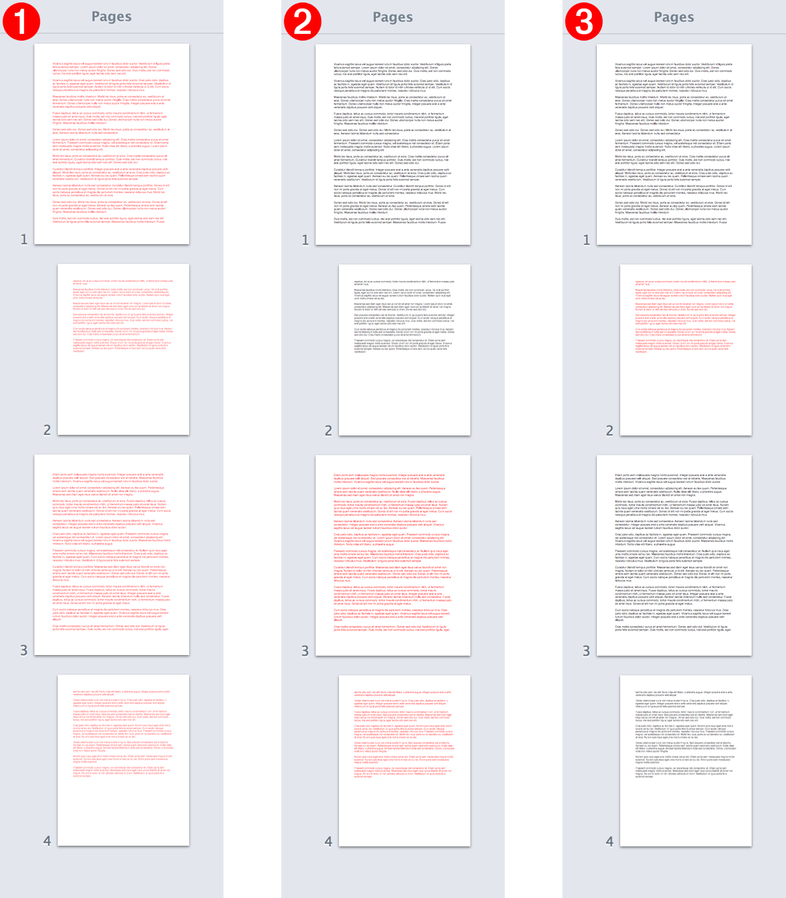

By design Pages has a “dual personality,” functioning as both a layout and a word-processing application.
In page layout documents, every page is a blank canvas to which you can add text, images, shapes, and other objects and arrange them however you want. Some Pages templates are designed specifically for creating page layout documents.
The essence of word-processing documents is the body of text that flows between added sections and pages. In scripting terminology, the main flow is the body text.
It is interesting to note that although body text is a property, it is often treated as if it were a class, becoming the target of script statements that not only get and set the content of text containers, but also apply formatting to the contained text.
It is additionally of interest that the body text property is shared by three text container classes of Pages: document, section, and page.
Here are excerpts from the dictionary entries for the three classes:
document n : A Pages document.
properties
body text (text ) : The body text of the document.
current page (page r/o ) : The currently selected page of the document.
document body (boolean ) : Whether the document has body text.
section n : A collection of contiguous pages comprising a section within a document.
elements
contains pages; contained by documents.
properties
body text (text ) : The body text of the section.
page n : A page of the document.
elements
contained by documents, sections.
properties
body text (text ) : The body text of the page.
By addressing the body text property within the scope of the three text flow containers, scripts can effect change upon specific parts of a word-processing document. The image below shows the result of three scripts targeting each of the text flow containers.
In the illustration below, scripts have colored the body text in each of the three text containers: document 1 , section 2 , and page 3 . Click a column of page thumbnails to view its related script.

1 Document Body Text (see image)
2 Section Body Text (see image)
The next topic covers applying formatting to body text.